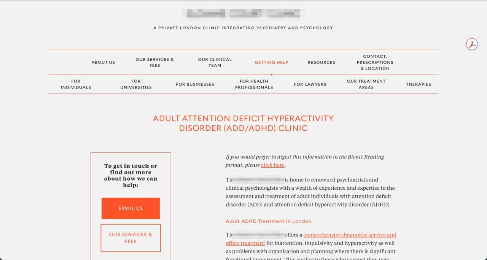
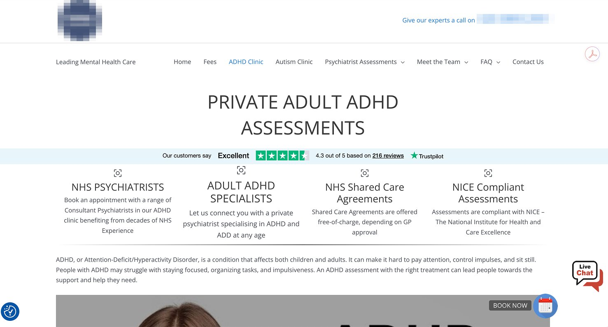
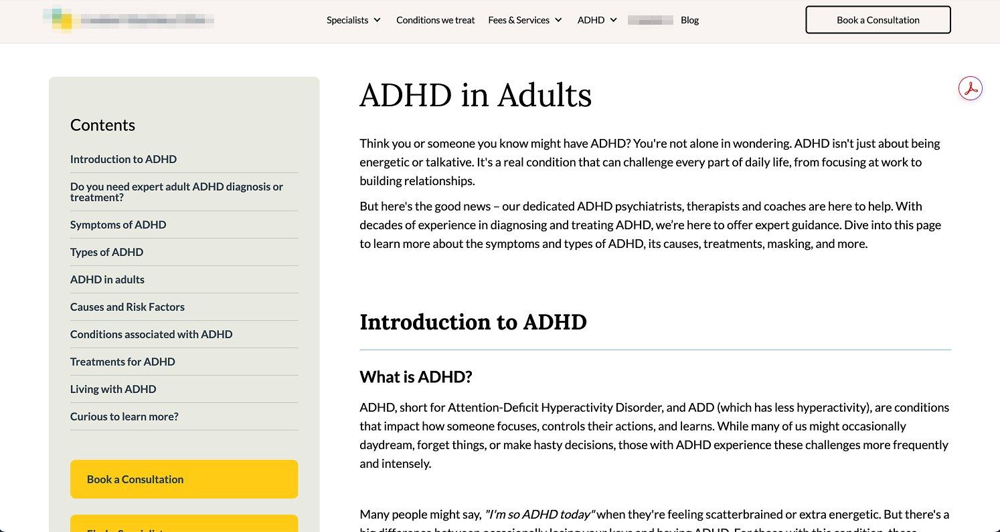
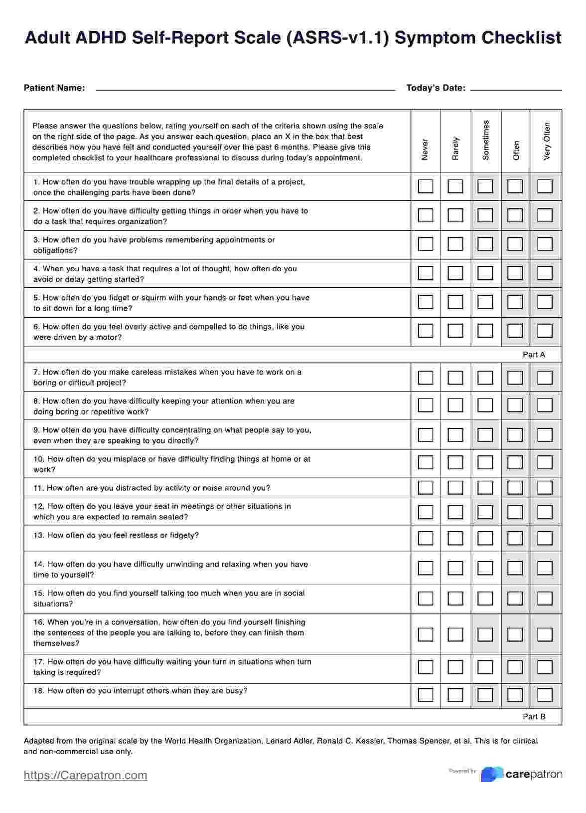
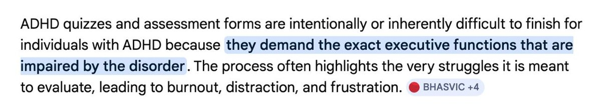
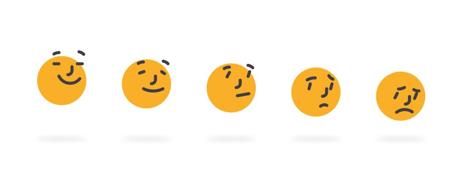
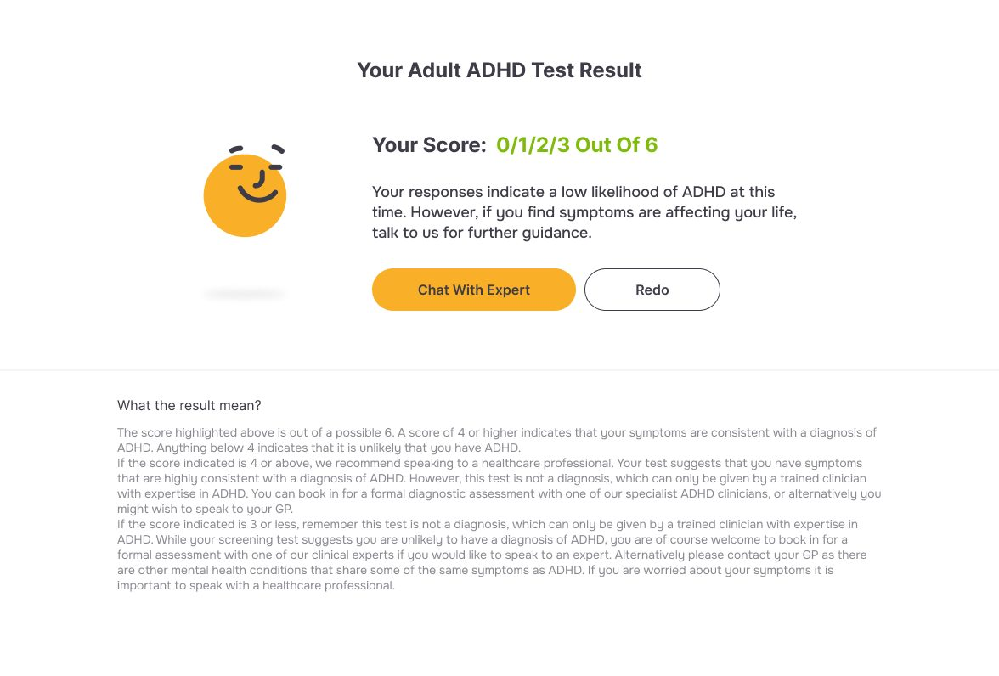
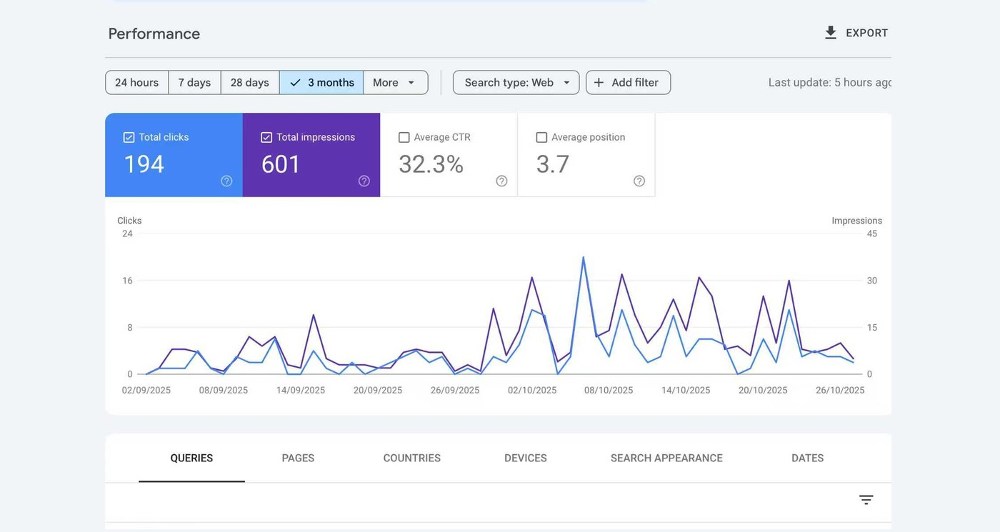
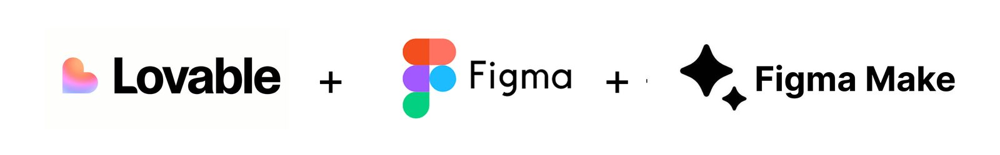

An ADHD assessment that people with ADHD can finish.
Designed for people with ADHD and their families. The 0 to 1 for an AI ADHD company, live in two weeks.
This page runs on the product’s rules. One idea at a time, large type, high contrast. If it reads easily, that is the case study.
Somebody who suspects they have ADHD has three things to get through first, each built for a different kind of reader.



Small type, long navigation, paragraphs before anything happens. Counted off the first one:
A lot of attention to spend before you have learned anything.

Eighteen questions, five lines of text each, and at the end you add up your own score across two parts.
The form asks for the exact executive function ADHD takes away. People started it, stopped partway, and never reached care.

You read the site, then you register somewhere else, then a questionnaire arrives by email, and you have to remember to go back and finish it.
Every step is somewhere to drop out, and this is the audience least able to carry a plan across them. None of the three pages above keeps the test on the page.
The rule I set myself: spend as little of a person’s attention as possible before they know whether they need help.
A site designed for an ADHD reader.
The questionnaire, gamified, inside the site.
From the result into our service in one tap.
The site had been built for a neurotypical reader, like the clinic pages.
So I wrote new rules: one highlight colour so the eye lands where it should, larger type, more space, one clear action per screen.
Transform ADHD
Heading 2 · Onest 34 SemiboldQuick Assessment
Heading 3 · Onest 24 SemiboldWhat the result means
Body · Onest 18 RegularStruggling with focus, overwhelm, or feeling misunderstood?
Link · Onest 18 Regular · #8E5D04Book an assessment
Ratios are the text colour on each ground. The highlight is a fill at 1.8:1 as text, so links take a darker tone, #8E5D04.
We were the first to put the screener inside the page itself. You answer without an account or a second visit, and the result appears right there.
Each question arrives on its own, answered by dragging a slider, with a face that reacts as you move it.
Underneath is the ASRS’s own screener, Part A: six questions out of the eighteen, scored the way a clinic scores them.
Four or more and it tells you to go and get assessed. Shorter, still clinically valid.
Eighteen questions on one page, and you add up your own score.
Six questions, one at a time, scored for you, with the result on the page.

The team has kept developing the site since I left, and the assessment now sits further down the page.
When the test ends, the result screen points straight at our service. One tap goes into booking, with named clinicians in the same flow, so nobody has to find their way back to it later.

All five testers with ADHD finished the assessment people used to drop out of.
| Clinic page | Innovate ADHD | |
|---|---|---|
| Links in the first screen | 19 | 8 |
| Navigation items | 13 | 5 |
| Words in the first screen | about 150 | 45 |
Counted the same way, both captures 1280 wide.
Every row is something you can count.
Four people with ADHD used it, and I sat with them.
“It felt easier. Other sites have so much text that I have no idea where to look.”
“The interaction is actually interesting. The old ones are so dull. I finished it, and I got my result quickly. I didn’t have to register, wait for a screening questionnaire, then remember to answer an email. That kills any motivation to do the test. Here I could see my result and what to do next, right on the page.”
“This would work for the full twenty-four-question version. I think far fewer people would give up halfway.”
“Cute site. I like it.”
“The logic is really clear, and the thing that made me happy is that I actually finished the basic ADHD test. I like it. It’s genuinely fun.”
Each said the same thing: easy to move through, and they knew quickly whether they needed help.
of all clicks on the page landed on the assessment slider.
The most-used thing on the page, and that page is the one the product depends on.
Microsoft Clarity, on the live site after launch.

Next I’d instrument the assessment question by question, so a drop-off traces to a specific screen, then run it against the original form with real users on both sides to measure clinical completion.
I design for ADHD.
Executive function is the expensive part.
So I build the thing to cost as little concentration as possible.
This page is built the same way.
AI sat inside a deliberate chain, and I stayed on the code myself at the end.
